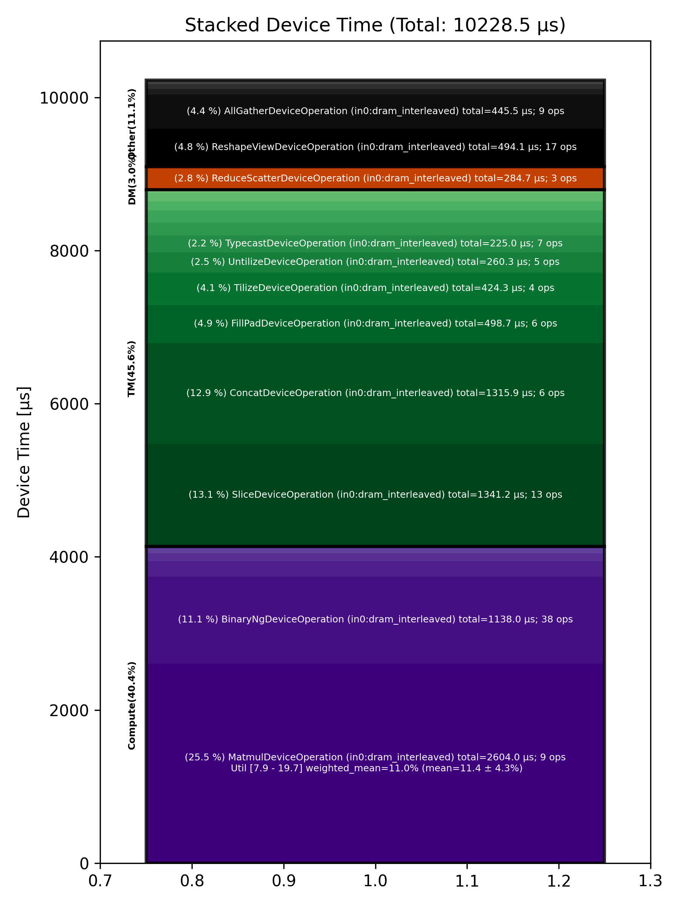

🚀 Performance Report 🚀 ======================== ID Total % Bound OP Code Device Device Time Op-to-Op Gap Cores DRAM DRAM % FLOPs FLOPs % Math Fidelity ------------------------------------------------------------------------------------------------------------------------------------------------------------------------- 25 0.2 % TypecastDeviceOperation 12 59 μs 72 BF16 => FP32 36 0.7 % UnaryDeviceOperation 26 69 μs 194 μs 72 FP32 => FP32 80 0.2 % FillPadDeviceOperation 5 80 μs 14 μs 64 FP32 => FP32 118 0.4 % ReduceDeviceOperation 15 36 μs 125 μs 64 FP32 => FP32 145 0.6 % ReshapeViewDeviceOperation 4 23 μs 229 μs 2 FP32 => FP32 177 0.8 % AllGatherDeviceOperation 0 18 μs 296 μs 8 FP32 => FP32 211 0.2 % FillPadDeviceOperation 21 9 μs 82 μs 4 FP32 => FP32 254 0.6 % TransposeDeviceOperation 11 6 μs 212 μs 72 FP32 => FP32 281 0.6 % ReduceDeviceOperation 12 5 μs 235 μs 64 FP32 => FP32 313 0.3 % TransposeDeviceOperation 12 3 μs 95 μs 72 FP32 => FP32 327 0.5 % BinaryNgDeviceOperation 2 9 μs 186 μs 72 FP32, FP32 => FP32 368 0.7 % BinaryNgDeviceOperation 5 9 μs 253 μs 72 FP32, FP32 => FP32 405 0.6 % UnaryDeviceOperation 23 3 μs 219 μs 2 FP32 => FP32 429 0.3 % ReshapeViewDeviceOperation 31 38 μs 96 μs 46 FP32 => FP32 464 0.4 % BinaryNgDeviceOperation 5 14 μs 139 μs 72 FP32, FP32 => FP32 502 0.7 % BinaryNgDeviceOperation 15 18 μs 264 μs 72 FP32, FP32 => FP32 543 0.6 % TypecastDeviceOperation 10 3 μs 241 μs 46 FP32 => BF16 562 1.4 % SLOW MatmulDeviceOperation 64 x 736 x 512 15 29 μs 504 μs 16 18 GB/s 6.3 % 1.6 TFLOPs 10.0 % HiFi4 BF16 x BFP8 => BF16 593 1.6 % ReduceScatterDeviceOperation 0 49 μs 558 μs 24 BF16 => BF16 625 1.0 % AllGatherDeviceOperation 0 31 μs 353 μs 24 BF16 => BF16 673 0.3 % BinaryNgDeviceOperation 8 3 μs 118 μs 72 BF16, BF16 => BF16 682 0.6 % ReshapeViewDeviceOperation 28 32 μs 201 μs 72 BF16 => BF16 734 0.6 % SliceDeviceOperation 11 16 μs 227 μs 72 BF16 => BF16 769 0.8 % BinaryNgDeviceOperation 8 53 μs 260 μs 72 BF16, BF16 => BF16 792 0.6 % SliceDeviceOperation 13 15 μs 207 μs 72 BF16 => BF16 830 0.4 % BinaryNgDeviceOperation 11 56 μs 99 μs 72 BF16, BF16 => BF16 861 0.3 % BinaryNgDeviceOperation 19 16 μs 114 μs 72 BF16, BF16 => BF16 887 0.8 % BinaryNgDeviceOperation 14 53 μs 257 μs 72 BF16, BF16 => BF16 905 0.7 % BinaryNgDeviceOperation 0 56 μs 205 μs 72 BF16, BF16 => BF16 932 0.6 % BinaryNgDeviceOperation 26 16 μs 210 μs 72 BF16, BF16 => BF16 986 0.7 % ConcatDeviceOperation 16 25 μs 241 μs 72 BF16, BF16 => BF16 1010 1.4 % SLOW MatmulDeviceOperation 64 x 736 x 64 15 18 μs 531 μs 4 8 GB/s 2.9 % 0.3 TFLOPs 8.2 % HiFi4 BF16 x BFP8 => BF16 1041 0.8 % AllGatherDeviceOperation 0 17 μs 288 μs 8 BF16 => BF16 1058 0.3 % FastReduceNCDeviceOperation 24 2 μs 100 μs 4 BF16 => BF16 1111 0.8 % BinaryNgDeviceOperation 14 3 μs 303 μs 72 BF16, BF16 => BF16 1126 0.7 % ReshapeViewDeviceOperation 3 8 μs 265 μs 72 BF16 => BF16 1178 0.7 % PermuteDeviceOperation 16 12 μs 246 μs 72 BF16 => BF16 1212 0.2 % SliceDeviceOperation 18 3 μs 91 μs 64 BF16 => BF16 1229 0.5 % BinaryNgDeviceOperation 31 9 μs 172 μs 72 BF16, BF16 => BF16 1262 0.6 % SliceDeviceOperation 7 3 μs 244 μs 64 BF16 => BF16 1288 0.3 % BinaryNgDeviceOperation 1 9 μs 108 μs 72 BF16, BF16 => BF16 1326 0.4 % BinaryNgDeviceOperation 7 4 μs 144 μs 72 BF16, BF16 => BF16 1372 0.7 % BinaryNgDeviceOperation 18 9 μs 258 μs 72 BF16, BF16 => BF16 1390 0.7 % BinaryNgDeviceOperation 7 9 μs 254 μs 72 BF16, BF16 => BF16 1438 0.6 % BinaryNgDeviceOperation 11 4 μs 246 μs 72 BF16, BF16 => BF16 1468 0.3 % ConcatDeviceOperation 18 4 μs 97 μs 72 BF16, BF16 => BF16 1479 0.5 % InterleavedToShardedDeviceOperation 2 2 μs 196 μs 64 BF16 => BF16 1514 0.6 % PagedUpdateCacheDeviceOperation 28 7 μs 213 μs 64 BF16, BF16 => BF16 1550 0.3 % UntilizeDeviceOperation 7 18 μs 106 μs 64 BF16 => BF16 1579 1.5 % ConcatDeviceOperation 29 429 μs 141 μs 72 BF16, BF16 => BF16 1633 0.3 % TilizeDeviceOperation 8 109 μs 1 μs 71 BF16 => BF16 1657 0.2 % TransposeDeviceOperation 12 91 μs 1 μs 72 BF16 => BF16 1673 2.6 % SLOW MatmulDeviceOperation 32 x 64 x 128 30 832 μs 193 μs 4 18 GB/s 6.1 % 0.3 TFLOPs 7.9 % HiFi4 BF16 x BF16 => BF16 1717 0.2 % BinaryNgDeviceOperation 23 85 μs 1 μs 72 BF16, BF16 => BF16 1733 0.2 % BinaryNgDeviceOperation 27 89 μs 1 μs 72 BF16, BF16 => BF16 1778 0.1 % UntilizeWithUnpaddingDeviceOperation 20 26 μs 1 μs 64 BF16 => BF16 1820 0.0 % UntilizeWithUnpaddingDeviceOperation 18 9 μs 1 μs 64 BF16 => BF16 1831 0.2 % PermuteDeviceOperation 2 70 μs 1 μs 72 BF16 => BF16 1883 1.1 % ConcatDeviceOperation 17 426 μs 10 μs 72 BF16, BF16 => BF16 1893 0.2 % PermuteDeviceOperation 27 61 μs 1 μs 72 BF16 => BF16 1927 0.3 % TilizeWithValPaddingDeviceOperation 2 112 μs 1 μs 64 BF16 => BF16 1964 0.2 % SoftmaxDeviceOperation 30 84 μs 1 μs 72 BF16 => BF16 2006 0.2 % SliceDeviceOperation 15 45 μs 26 μs 72 BF16 => BF16 2027 1.1 % SLOW MatmulDeviceOperation 64 x 736 x 64 18 18 μs 417 μs 4 9 GB/s 3.0 % 0.3 TFLOPs 8.4 % HiFi4 BF16 x BFP8 => BF16 2065 0.7 % AllGatherDeviceOperation 0 16 μs 243 μs 8 BF16 => BF16 2111 0.3 % FastReduceNCDeviceOperation 10 2 μs 114 μs 4 BF16 => BF16 2141 0.5 % BinaryNgDeviceOperation 19 3 μs 212 μs 72 BF16, BF16 => BF16 2158 0.7 % ReshapeViewDeviceOperation 7 8 μs 248 μs 72 BF16 => BF16 2186 0.7 % PermuteDeviceOperation 28 11 μs 246 μs 72 BF16 => BF16 2213 0.3 % InterleavedToShardedDeviceOperation 27 2 μs 105 μs 64 BF16 => BF16 2242 0.3 % PagedUpdateCacheDeviceOperation 24 7 μs 124 μs 64 BF16, BF16 => BF16 2278 0.3 % UntilizeDeviceOperation 3 17 μs 97 μs 64 BF16 => BF16 2315 1.5 % ConcatDeviceOperation 29 431 μs 166 μs 72 BF16, BF16 => BF16 2338 0.3 % TilizeDeviceOperation 24 107 μs 1 μs 71 BF16 => BF16 2377 3.2 % SLOW MatmulDeviceOperation 32 x 128 x 64 30 1,231 μs 38 μs 2 12 GB/s 4.1 % 0.2 TFLOPs 10.6 % HiFi4 BF16 x BF16 => BF16 2426 0.1 % ReshapeViewDeviceOperation 16 26 μs 1 μs 32 BF16 => BF16 2465 0.0 % SLOW MatmulDeviceOperation 64 x 512 x 736 11 15 μs 1 μs 23 35 GB/s 12.1 % 3.1 TFLOPs 13.2 % HiFi4 BF16 x BFP8 => BF16 2481 0.2 % AllGatherDeviceOperation 0 63 μs 1 μs 24 BF16 => BF16 2498 0.0 % FillPadDeviceOperation 24 6 μs 1 μs 8 BF16 => BF16 2558 0.0 % FastReduceNCDeviceOperation 11 7 μs 1 μs 46 BF16 => BF16 2589 0.0 % SliceDeviceOperation 19 3 μs 1 μs 46 BF16 => BF16 2603 0.5 % BinaryNgDeviceOperation 29 4 μs 190 μs 72 BF16, BF16 => BF16 2648 0.7 % ReshapeViewDeviceOperation 13 44 μs 247 μs 72 BF16 => BF16 2684 0.7 % BinaryNgDeviceOperation 18 50 μs 240 μs 72 BF16, BF16 => BF16 2720 0.7 % TypecastDeviceOperation 9 56 μs 206 μs 72 BF16 => FP32 2740 0.7 % UnaryDeviceOperation 22 69 μs 224 μs 72 FP32 => FP32 2775 0.2 % FillPadDeviceOperation 14 79 μs 11 μs 64 FP32 => FP32 2792 0.4 % ReduceDeviceOperation 1 36 μs 109 μs 64 FP32 => FP32 2819 0.2 % ReshapeViewDeviceOperation 25 24 μs 46 μs 2 FP32 => FP32 2865 1.0 % AllGatherDeviceOperation 0 16 μs 376 μs 8 FP32 => FP32 2882 0.2 % FillPadDeviceOperation 24 9 μs 77 μs 4 FP32 => FP32 2917 0.9 % TransposeDeviceOperation 27 6 μs 363 μs 72 FP32 => FP32 2969 0.2 % ReduceDeviceOperation 12 4 μs 85 μs 64 FP32 => FP32 2998 0.4 % TransposeDeviceOperation 15 3 μs 168 μs 72 FP32 => FP32 3023 0.3 % ReshapeViewDeviceOperation 6 9 μs 101 μs 64 FP32 => FP32 3051 0.5 % BinaryNgDeviceOperation 29 16 μs 175 μs 72 FP32, FP32 => FP32 3077 0.7 % BinaryNgDeviceOperation 27 15 μs 252 μs 72 FP32, FP32 => FP32 3117 0.6 % UnaryDeviceOperation 31 6 μs 235 μs 64 FP32 => FP32 3161 0.9 % BinaryNgDeviceOperation 12 78 μs 266 μs 72 FP32, FP32 => FP32 3170 0.7 % BinaryNgDeviceOperation 24 89 μs 183 μs 72 FP32, FP32 => FP32 3213 0.5 % TypecastDeviceOperation 31 46 μs 168 μs 72 FP32 => BF16 3262 0.6 % ReshapeViewDeviceOperation 11 26 μs 205 μs 46 BF16 => BF16 3295 0.2 % UntilizeWithUnpaddingDeviceOperation 10 26 μs 67 μs 2 BF16 => BF16 3319 0.4 % RepeatDeviceOperation 14 9 μs 139 μs 72 BF16 => BF16 3343 0.3 % TilizeWithValPaddingDeviceOperation 6 22 μs 83 μs 8 BF16 => BF16 3363 1.7 % SLOW MatmulDeviceOperation 64 x 736 x 5760 9 209 μs 457 μs 60 97 GB/s 33.6 % 10.4 TFLOPs 16.8 % HiFi4 BF16 x BFP8 => BF16 3409 1.3 % ReduceScatterDeviceOperation 0 96 μs 404 μs 24 BF16 => BF16 3441 1.1 % AllGatherDeviceOperation 0 92 μs 347 μs 40 BF16 => BF16 3468 0.3 % BinaryNgDeviceOperation 30 49 μs 59 μs 72 BF16, BF16 => BF16 3492 0.7 % UntilizeDeviceOperation 26 111 μs 164 μs 60 BF16 => BF16 3553 1.9 % SliceDeviceOperation 8 608 μs 153 μs 72 BF16 => BF16 3554 0.3 % TilizeDeviceOperation 24 104 μs 1 μs 45 BF16 => BF16 3610 0.0 % UnaryDeviceOperation 16 17 μs 1 μs 72 BF16 => BF16 3627 0.1 % BinaryNgDeviceOperation 29 24 μs 1 μs 72 BF16, BF16 => BF16 3652 0.5 % UntilizeDeviceOperation 26 111 μs 72 μs 60 BF16 => BF16 3713 1.9 % SliceDeviceOperation 8 607 μs 145 μs 72 BF16 => BF16 3725 0.3 % TilizeDeviceOperation 31 104 μs 1 μs 45 BF16 => BF16 3775 0.0 % UnaryDeviceOperation 10 17 μs 1 μs 72 BF16 => BF16 3784 0.1 % BinaryNgDeviceOperation 1 23 μs 1 μs 72 BF16, BF16 => BF16 3823 0.1 % UnaryDeviceOperation 6 19 μs 1 μs 72 BF16 => BF16 3844 0.4 % BinaryNgDeviceOperation 26 23 μs 117 μs 72 BF16, BF16 => BF16 3881 0.7 % BinaryNgDeviceOperation 0 23 μs 237 μs 72 BF16, BF16 => BF16 3914 1.7 % SLOW MatmulDeviceOperation 64 x 2880 x 736 13 234 μs 418 μs 23 44 GB/s 15.4 % 4.6 TFLOPs 19.7 % HiFi4 BF16 x BFP8 => BF16 3946 0.0 % BinaryNgDeviceOperation 28 8 μs 1 μs 72 BF16, BF16 => BF16 3976 0.6 % ReshapeViewDeviceOperation 1 162 μs 89 μs 72 BF16 => BF16 4019 0.5 % TypecastDeviceOperation 21 57 μs 134 μs 72 BF16 => FP32 4044 0.6 % ReshapeViewDeviceOperation 30 38 μs 186 μs 46 FP32 => FP32 4094 0.7 % SLOW MatmulDeviceOperation 64 x 736 x 32 17 19 μs 264 μs 2 12 GB/s 4.1 % 0.2 TFLOPs 7.9 % HiFi4 FP32 x BFP8 => FP32 4113 0.8 % AllGatherDeviceOperation 0 18 μs 277 μs 8 FP32 => FP32 4153 0.4 % TransposeDeviceOperation 12 6 μs 131 μs 72 FP32 => FP32 4176 0.4 % ReduceDeviceOperation 5 5 μs 161 μs 64 FP32 => FP32 4209 0.3 % TransposeDeviceOperation 4 3 μs 97 μs 72 FP32 => FP32 4241 0.5 % BinaryNgDeviceOperation 4 17 μs 176 μs 72 FP32, FP32 => FP32 4268 0.6 % TypecastDeviceOperation 30 2 μs 218 μs 2 FP32 => BF16 4313 0.3 % PadDeviceOperation 12 35 μs 97 μs 4 BF16 => BF16 4329 0.4 % TopKDeviceOperation 0 44 μs 131 μs 2 BF16 => BF16 4364 0.6 % SliceDeviceOperation 30 1 μs 214 μs 2 BF16 => BF16 4395 0.2 % SliceDeviceOperation 29 1 μs 94 μs 2 UINT16 => UINT16 4418 0.4 % TypecastDeviceOperation 24 2 μs 170 μs 2 UINT16 => INT32 4453 0.2 % ReshapeViewDeviceOperation 27 7 μs 88 μs 8 INT32 => INT32 4490 0.5 % UntilizeWithUnpaddingDeviceOperation 28 14 μs 183 μs 8 INT32 => INT32 4520 0.6 % UntilizeWithUnpaddingDeviceOperation 1 14 μs 234 μs 8 INT32 => INT32 4569 0.2 % PermuteDeviceOperation 12 4 μs 68 μs 8 INT32 => INT32 4592 0.5 % PermuteDeviceOperation 5 4 μs 182 μs 8 INT32 => INT32 4628 0.2 % ConcatDeviceOperation 22 1 μs 79 μs 2 INT32, INT32 => INT32 4657 0.5 % PermuteDeviceOperation 4 4 μs 197 μs 8 INT32 => INT32 4695 0.3 % TilizeWithValPaddingDeviceOperation 14 8 μs 93 μs 8 INT32 => INT32 4734 0.9 % SoftmaxDeviceOperation 11 24 μs 311 μs 72 BF16 => BF16 4756 0.5 % SliceDeviceOperation 22 2 μs 211 μs 8 INT32 => INT32 4776 0.3 % UntilizeWithUnpaddingDeviceOperation 1 14 μs 102 μs 8 INT32 => INT32 4807 0.4 % SliceDeviceOperation 2 4 μs 159 μs 72 INT32 => INT32 4839 0.6 % TilizeWithValPaddingDeviceOperation 2 8 μs 225 μs 8 INT32 => INT32 4871 0.3 % BinaryNgDeviceOperation 2 11 μs 110 μs 72 INT32, INT32 => INT32 4922 0.4 % BinaryNgDeviceOperation 16 3 μs 165 μs 72 INT32, INT32 => INT32 4947 0.6 % ReshapeViewDeviceOperation 21 7 μs 241 μs 8 INT32 => INT32 4962 0.6 % ReshapeViewDeviceOperation 24 3 μs 237 μs 8 BF16 => BF16 5025 0.3 % UntilizeWithUnpaddingDeviceOperation 8 7 μs 95 μs 1 INT32 => INT32 5055 0.4 % UntilizeWithUnpaddingDeviceOperation 10 6 μs 165 μs 1 BF16 => BF16 5088 0.4 % ScatterDeviceOperation 9 60 μs 93 μs 1 BF16, INT32 => BF16 5100 0.4 % TilizeWithValPaddingDeviceOperation 30 5 μs 140 μs 64 BF16 => BF16 5127 0.7 % ReshapeViewDeviceOperation 2 23 μs 247 μs 2 BF16 => BF16 5185 0.2 % UntilizeDeviceOperation 8 4 μs 77 μs 2 BF16 => BF16 5207 3.0 % MeshPartitionDeviceOperation 31 2 μs 1,175 μs 64 BF16 => BF16 5224 0.3 % TilizeWithValPaddingDeviceOperation 1 5 μs 131 μs 2 BF16 => BF16 5252 0.7 % TransposeDeviceOperation 26 2 μs 271 μs 72 BF16 => BF16 5288 0.7 % ReshapeViewDeviceOperation 1 16 μs 275 μs 72 BF16 => BF16 5329 1.0 % BinaryNgDeviceOperation 4 129 μs 267 μs 72 BF16, BF16 => BF16 5367 1.2 % FillPadDeviceOperation 14 315 μs 147 μs 72 BF16 => BF16 5401 0.2 % FastReduceNCDeviceOperation 12 66 μs 1 μs 72 BF16 => BF16 5420 0.1 % SliceDeviceOperation 30 34 μs 1 μs 72 BF16 => BF16 5457 2.1 % ReduceScatterDeviceOperation 0 139 μs 666 μs 24 BF16 => BF16 5489 1.2 % AllGatherDeviceOperation 0 174 μs 286 μs 40 BF16 => BF16 5519 0.1 % BinaryNgDeviceOperation 6 49 μs 1 μs 72 BF16, BF16 => BF16 ------------------------------------------------------------------------------------------------------------------------------------------------------------------------- 100.0 % 173 device ops, 0 host ops, 0 signposts 10,228 μs 28,845 μs 💡 Advice 💡 ============ High Op-to-Op Gap ---------------- 36 0.7 % UnaryDeviceOperation 26 69 μs 194 μs 72 FP32 => FP32 80 0.2 % FillPadDeviceOperation 5 80 μs 14 μs 64 FP32 => FP32 118 0.4 % ReduceDeviceOperation 15 36 μs 125 μs 64 FP32 => FP32 145 0.6 % ReshapeViewDeviceOperation 4 23 μs 229 μs 2 FP32 => FP32 177 0.8 % AllGatherDeviceOperation 0 18 μs 296 μs 8 FP32 => FP32 211 0.2 % FillPadDeviceOperation 21 9 μs 82 μs 4 FP32 => FP32 254 0.6 % TransposeDeviceOperation 11 6 μs 212 μs 72 FP32 => FP32 281 0.6 % ReduceDeviceOperation 12 5 μs 235 μs 64 FP32 => FP32 313 0.3 % TransposeDeviceOperation 12 3 μs 95 μs 72 FP32 => FP32 327 0.5 % BinaryNgDeviceOperation 2 9 μs 186 μs 72 FP32, FP32 => FP32 368 0.7 % BinaryNgDeviceOperation 5 9 μs 253 μs 72 FP32, FP32 => FP32 405 0.6 % UnaryDeviceOperation 23 3 μs 219 μs 2 FP32 => FP32 429 0.3 % ReshapeViewDeviceOperation 31 38 μs 96 μs 46 FP32 => FP32 464 0.4 % BinaryNgDeviceOperation 5 14 μs 139 μs 72 FP32, FP32 => FP32 502 0.7 % BinaryNgDeviceOperation 15 18 μs 264 μs 72 FP32, FP32 => FP32 543 0.6 % TypecastDeviceOperation 10 3 μs 241 μs 46 FP32 => BF16 562 1.4 % SLOW MatmulDeviceOperation 64 x 736 x 512 15 29 μs 504 μs 16 18 GB/s 6.3 % 1.6 TFLOPs 10.0 % HiFi4 BF16 x BFP8 => BF16 593 1.6 % ReduceScatterDeviceOperation 0 49 μs 558 μs 24 BF16 => BF16 625 1.0 % AllGatherDeviceOperation 0 31 μs 353 μs 24 BF16 => BF16 673 0.3 % BinaryNgDeviceOperation 8 3 μs 118 μs 72 BF16, BF16 => BF16 682 0.6 % ReshapeViewDeviceOperation 28 32 μs 201 μs 72 BF16 => BF16 734 0.6 % SliceDeviceOperation 11 16 μs 227 μs 72 BF16 => BF16 769 0.8 % BinaryNgDeviceOperation 8 53 μs 260 μs 72 BF16, BF16 => BF16 792 0.6 % SliceDeviceOperation 13 15 μs 207 μs 72 BF16 => BF16 830 0.4 % BinaryNgDeviceOperation 11 56 μs 99 μs 72 BF16, BF16 => BF16 861 0.3 % BinaryNgDeviceOperation 19 16 μs 114 μs 72 BF16, BF16 => BF16 887 0.8 % BinaryNgDeviceOperation 14 53 μs 257 μs 72 BF16, BF16 => BF16 905 0.7 % BinaryNgDeviceOperation 0 56 μs 205 μs 72 BF16, BF16 => BF16 932 0.6 % BinaryNgDeviceOperation 26 16 μs 210 μs 72 BF16, BF16 => BF16 986 0.7 % ConcatDeviceOperation 16 25 μs 241 μs 72 BF16, BF16 => BF16 1010 1.4 % SLOW MatmulDeviceOperation 64 x 736 x 64 15 18 μs 531 μs 4 8 GB/s 2.9 % 0.3 TFLOPs 8.2 % HiFi4 BF16 x BFP8 => BF16 1041 0.8 % AllGatherDeviceOperation 0 17 μs 288 μs 8 BF16 => BF16 1058 0.3 % FastReduceNCDeviceOperation 24 2 μs 100 μs 4 BF16 => BF16 1111 0.8 % BinaryNgDeviceOperation 14 3 μs 303 μs 72 BF16, BF16 => BF16 1126 0.7 % ReshapeViewDeviceOperation 3 8 μs 265 μs 72 BF16 => BF16 1178 0.7 % PermuteDeviceOperation 16 12 μs 246 μs 72 BF16 => BF16 1212 0.2 % SliceDeviceOperation 18 3 μs 91 μs 64 BF16 => BF16 1229 0.5 % BinaryNgDeviceOperation 31 9 μs 172 μs 72 BF16, BF16 => BF16 1262 0.6 % SliceDeviceOperation 7 3 μs 244 μs 64 BF16 => BF16 1288 0.3 % BinaryNgDeviceOperation 1 9 μs 108 μs 72 BF16, BF16 => BF16 1326 0.4 % BinaryNgDeviceOperation 7 4 μs 144 μs 72 BF16, BF16 => BF16 1372 0.7 % BinaryNgDeviceOperation 18 9 μs 258 μs 72 BF16, BF16 => BF16 1390 0.7 % BinaryNgDeviceOperation 7 9 μs 254 μs 72 BF16, BF16 => BF16 1438 0.6 % BinaryNgDeviceOperation 11 4 μs 246 μs 72 BF16, BF16 => BF16 1468 0.3 % ConcatDeviceOperation 18 4 μs 97 μs 72 BF16, BF16 => BF16 1479 0.5 % InterleavedToShardedDeviceOperation 2 2 μs 196 μs 64 BF16 => BF16 1514 0.6 % PagedUpdateCacheDeviceOperation 28 7 μs 213 μs 64 BF16, BF16 => BF16 1550 0.3 % UntilizeDeviceOperation 7 18 μs 106 μs 64 BF16 => BF16 1579 1.5 % ConcatDeviceOperation 29 429 μs 141 μs 72 BF16, BF16 => BF16 1673 2.6 % SLOW MatmulDeviceOperation 32 x 64 x 128 30 832 μs 193 μs 4 18 GB/s 6.1 % 0.3 TFLOPs 7.9 % HiFi4 BF16 x BF16 => BF16 1883 1.1 % ConcatDeviceOperation 17 426 μs 10 μs 72 BF16, BF16 => BF16 2006 0.2 % SliceDeviceOperation 15 45 μs 26 μs 72 BF16 => BF16 2027 1.1 % SLOW MatmulDeviceOperation 64 x 736 x 64 18 18 μs 417 μs 4 9 GB/s 3.0 % 0.3 TFLOPs 8.4 % HiFi4 BF16 x BFP8 => BF16 2065 0.7 % AllGatherDeviceOperation 0 16 μs 243 μs 8 BF16 => BF16 2111 0.3 % FastReduceNCDeviceOperation 10 2 μs 114 μs 4 BF16 => BF16 2141 0.5 % BinaryNgDeviceOperation 19 3 μs 212 μs 72 BF16, BF16 => BF16 2158 0.7 % ReshapeViewDeviceOperation 7 8 μs 248 μs 72 BF16 => BF16 2186 0.7 % PermuteDeviceOperation 28 11 μs 246 μs 72 BF16 => BF16 2213 0.3 % InterleavedToShardedDeviceOperation 27 2 μs 105 μs 64 BF16 => BF16 2242 0.3 % PagedUpdateCacheDeviceOperation 24 7 μs 124 μs 64 BF16, BF16 => BF16 2278 0.3 % UntilizeDeviceOperation 3 17 μs 97 μs 64 BF16 => BF16 2315 1.5 % ConcatDeviceOperation 29 431 μs 166 μs 72 BF16, BF16 => BF16 2377 3.2 % SLOW MatmulDeviceOperation 32 x 128 x 64 30 1,231 μs 38 μs 2 12 GB/s 4.1 % 0.2 TFLOPs 10.6 % HiFi4 BF16 x BF16 => BF16 2603 0.5 % BinaryNgDeviceOperation 29 4 μs 190 μs 72 BF16, BF16 => BF16 2648 0.7 % ReshapeViewDeviceOperation 13 44 μs 247 μs 72 BF16 => BF16 2684 0.7 % BinaryNgDeviceOperation 18 50 μs 240 μs 72 BF16, BF16 => BF16 2720 0.7 % TypecastDeviceOperation 9 56 μs 206 μs 72 BF16 => FP32 2740 0.7 % UnaryDeviceOperation 22 69 μs 224 μs 72 FP32 => FP32 2775 0.2 % FillPadDeviceOperation 14 79 μs 11 μs 64 FP32 => FP32 2792 0.4 % ReduceDeviceOperation 1 36 μs 109 μs 64 FP32 => FP32 2819 0.2 % ReshapeViewDeviceOperation 25 24 μs 46 μs 2 FP32 => FP32 2865 1.0 % AllGatherDeviceOperation 0 16 μs 376 μs 8 FP32 => FP32 2882 0.2 % FillPadDeviceOperation 24 9 μs 77 μs 4 FP32 => FP32 2917 0.9 % TransposeDeviceOperation 27 6 μs 363 μs 72 FP32 => FP32 2969 0.2 % ReduceDeviceOperation 12 4 μs 85 μs 64 FP32 => FP32 2998 0.4 % TransposeDeviceOperation 15 3 μs 168 μs 72 FP32 => FP32 3023 0.3 % ReshapeViewDeviceOperation 6 9 μs 101 μs 64 FP32 => FP32 3051 0.5 % BinaryNgDeviceOperation 29 16 μs 175 μs 72 FP32, FP32 => FP32 3077 0.7 % BinaryNgDeviceOperation 27 15 μs 252 μs 72 FP32, FP32 => FP32 3117 0.6 % UnaryDeviceOperation 31 6 μs 235 μs 64 FP32 => FP32 3161 0.9 % BinaryNgDeviceOperation 12 78 μs 266 μs 72 FP32, FP32 => FP32 3170 0.7 % BinaryNgDeviceOperation 24 89 μs 183 μs 72 FP32, FP32 => FP32 3213 0.5 % TypecastDeviceOperation 31 46 μs 168 μs 72 FP32 => BF16 3262 0.6 % ReshapeViewDeviceOperation 11 26 μs 205 μs 46 BF16 => BF16 3295 0.2 % UntilizeWithUnpaddingDeviceOperation 10 26 μs 67 μs 2 BF16 => BF16 3319 0.4 % RepeatDeviceOperation 14 9 μs 139 μs 72 BF16 => BF16 3343 0.3 % TilizeWithValPaddingDeviceOperation 6 22 μs 83 μs 8 BF16 => BF16 3363 1.7 % SLOW MatmulDeviceOperation 64 x 736 x 5760 9 209 μs 457 μs 60 97 GB/s 33.6 % 10.4 TFLOPs 16.8 % HiFi4 BF16 x BFP8 => BF16 3409 1.3 % ReduceScatterDeviceOperation 0 96 μs 404 μs 24 BF16 => BF16 3441 1.1 % AllGatherDeviceOperation 0 92 μs 347 μs 40 BF16 => BF16 3468 0.3 % BinaryNgDeviceOperation 30 49 μs 59 μs 72 BF16, BF16 => BF16 3492 0.7 % UntilizeDeviceOperation 26 111 μs 164 μs 60 BF16 => BF16 3553 1.9 % SliceDeviceOperation 8 608 μs 153 μs 72 BF16 => BF16 3652 0.5 % UntilizeDeviceOperation 26 111 μs 72 μs 60 BF16 => BF16 3713 1.9 % SliceDeviceOperation 8 607 μs 145 μs 72 BF16 => BF16 3844 0.4 % BinaryNgDeviceOperation 26 23 μs 117 μs 72 BF16, BF16 => BF16 3881 0.7 % BinaryNgDeviceOperation 0 23 μs 237 μs 72 BF16, BF16 => BF16 3914 1.7 % SLOW MatmulDeviceOperation 64 x 2880 x 736 13 234 μs 418 μs 23 44 GB/s 15.4 % 4.6 TFLOPs 19.7 % HiFi4 BF16 x BFP8 => BF16 3976 0.6 % ReshapeViewDeviceOperation 1 162 μs 89 μs 72 BF16 => BF16 4019 0.5 % TypecastDeviceOperation 21 57 μs 134 μs 72 BF16 => FP32 4044 0.6 % ReshapeViewDeviceOperation 30 38 μs 186 μs 46 FP32 => FP32 4094 0.7 % SLOW MatmulDeviceOperation 64 x 736 x 32 17 19 μs 264 μs 2 12 GB/s 4.1 % 0.2 TFLOPs 7.9 % HiFi4 FP32 x BFP8 => FP32 4113 0.8 % AllGatherDeviceOperation 0 18 μs 277 μs 8 FP32 => FP32 4153 0.4 % TransposeDeviceOperation 12 6 μs 131 μs 72 FP32 => FP32 4176 0.4 % ReduceDeviceOperation 5 5 μs 161 μs 64 FP32 => FP32 4209 0.3 % TransposeDeviceOperation 4 3 μs 97 μs 72 FP32 => FP32 4241 0.5 % BinaryNgDeviceOperation 4 17 μs 176 μs 72 FP32, FP32 => FP32 4268 0.6 % TypecastDeviceOperation 30 2 μs 218 μs 2 FP32 => BF16 4313 0.3 % PadDeviceOperation 12 35 μs 97 μs 4 BF16 => BF16 4329 0.4 % TopKDeviceOperation 0 44 μs 131 μs 2 BF16 => BF16 4364 0.6 % SliceDeviceOperation 30 1 μs 214 μs 2 BF16 => BF16 4395 0.2 % SliceDeviceOperation 29 1 μs 94 μs 2 UINT16 => UINT16 4418 0.4 % TypecastDeviceOperation 24 2 μs 170 μs 2 UINT16 => INT32 4453 0.2 % ReshapeViewDeviceOperation 27 7 μs 88 μs 8 INT32 => INT32 4490 0.5 % UntilizeWithUnpaddingDeviceOperation 28 14 μs 183 μs 8 INT32 => INT32 4520 0.6 % UntilizeWithUnpaddingDeviceOperation 1 14 μs 234 μs 8 INT32 => INT32 4569 0.2 % PermuteDeviceOperation 12 4 μs 68 μs 8 INT32 => INT32 4592 0.5 % PermuteDeviceOperation 5 4 μs 182 μs 8 INT32 => INT32 4628 0.2 % ConcatDeviceOperation 22 1 μs 79 μs 2 INT32, INT32 => INT32 4657 0.5 % PermuteDeviceOperation 4 4 μs 197 μs 8 INT32 => INT32 4695 0.3 % TilizeWithValPaddingDeviceOperation 14 8 μs 93 μs 8 INT32 => INT32 4734 0.9 % SoftmaxDeviceOperation 11 24 μs 311 μs 72 BF16 => BF16 4756 0.5 % SliceDeviceOperation 22 2 μs 211 μs 8 INT32 => INT32 4776 0.3 % UntilizeWithUnpaddingDeviceOperation 1 14 μs 102 μs 8 INT32 => INT32 4807 0.4 % SliceDeviceOperation 2 4 μs 159 μs 72 INT32 => INT32 4839 0.6 % TilizeWithValPaddingDeviceOperation 2 8 μs 225 μs 8 INT32 => INT32 4871 0.3 % BinaryNgDeviceOperation 2 11 μs 110 μs 72 INT32, INT32 => INT32 4922 0.4 % BinaryNgDeviceOperation 16 3 μs 165 μs 72 INT32, INT32 => INT32 4947 0.6 % ReshapeViewDeviceOperation 21 7 μs 241 μs 8 INT32 => INT32 4962 0.6 % ReshapeViewDeviceOperation 24 3 μs 237 μs 8 BF16 => BF16 5025 0.3 % UntilizeWithUnpaddingDeviceOperation 8 7 μs 95 μs 1 INT32 => INT32 5055 0.4 % UntilizeWithUnpaddingDeviceOperation 10 6 μs 165 μs 1 BF16 => BF16 5088 0.4 % ScatterDeviceOperation 9 60 μs 93 μs 1 BF16, INT32 => BF16 5100 0.4 % TilizeWithValPaddingDeviceOperation 30 5 μs 140 μs 64 BF16 => BF16 5127 0.7 % ReshapeViewDeviceOperation 2 23 μs 247 μs 2 BF16 => BF16 5185 0.2 % UntilizeDeviceOperation 8 4 μs 77 μs 2 BF16 => BF16 5207 3.0 % MeshPartitionDeviceOperation 31 2 μs 1,175 μs 64 BF16 => BF16 5224 0.3 % TilizeWithValPaddingDeviceOperation 1 5 μs 131 μs 2 BF16 => BF16 5252 0.7 % TransposeDeviceOperation 26 2 μs 271 μs 72 BF16 => BF16 5288 0.7 % ReshapeViewDeviceOperation 1 16 μs 275 μs 72 BF16 => BF16 5329 1.0 % BinaryNgDeviceOperation 4 129 μs 267 μs 72 BF16, BF16 => BF16 5367 1.2 % FillPadDeviceOperation 14 315 μs 147 μs 72 BF16 => BF16 5457 2.1 % ReduceScatterDeviceOperation 0 139 μs 666 μs 24 BF16 => BF16 5489 1.2 % AllGatherDeviceOperation 0 174 μs 286 μs 40 BF16 => BF16 These ops have a >6 μs gap since the previous operation. Running with tracing could save 27964 μs (71.6% of overall time) Alternatively ensure device is not waiting for the host and use device.enable_async(True). Experts can try moving runtime args in the kernels to compile-time args. Matmul Optimization ------------------- 562 1.4 % SLOW MatmulDeviceOperation 64 x 736 x 512 15 29 μs 504 μs 16 18 GB/s 6.3 % 1.6 TFLOPs 10.0 % HiFi4 BF16 x BFP8 => BF16 - If possible place input 0 in L1 (currently in DEV_2_DRAM_INTERLEAVED) - in0_block_w=1 is small, try in0_block_w=2 or above - HiFi2 may also work, it discards the lowest bit of the activations and has 2x the throughput of HiFi4 1010 1.4 % SLOW MatmulDeviceOperation 64 x 736 x 64 15 18 μs 531 μs 4 8 GB/s 2.9 % 0.3 TFLOPs 8.2 % HiFi4 BF16 x BFP8 => BF16 - If possible place input 0 in L1 (currently in DEV_2_DRAM_INTERLEAVED) - in0_block_w=1 is small, try in0_block_w=2 or above - Output subblock 1x1 is small, try out_subblock_h * out_subblock_w >= 2 if possible - HiFi2 may also work, it discards the lowest bit of the activations and has 2x the throughput of HiFi4 1673 2.6 % SLOW MatmulDeviceOperation 32 x 64 x 128 30 832 μs 193 μs 4 18 GB/s 6.1 % 0.3 TFLOPs 7.9 % HiFi4 BF16 x BF16 => BF16 - If possible place input 0 in L1 (currently in DEV_2_DRAM_INTERLEAVED) - Output subblock 1x1 is small, try out_subblock_h * out_subblock_w >= 2 if possible - HiFi2 may also work, it discards the lowest bit of the activations and has 2x the throughput of HiFi4 2027 1.1 % SLOW MatmulDeviceOperation 64 x 736 x 64 18 18 μs 417 μs 4 9 GB/s 3.0 % 0.3 TFLOPs 8.4 % HiFi4 BF16 x BFP8 => BF16 - If possible place input 0 in L1 (currently in DEV_2_DRAM_INTERLEAVED) - in0_block_w=1 is small, try in0_block_w=2 or above - Output subblock 1x1 is small, try out_subblock_h * out_subblock_w >= 2 if possible - HiFi2 may also work, it discards the lowest bit of the activations and has 2x the throughput of HiFi4 2377 3.2 % SLOW MatmulDeviceOperation 32 x 128 x 64 30 1,231 μs 38 μs 2 12 GB/s 4.1 % 0.2 TFLOPs 10.6 % HiFi4 BF16 x BF16 => BF16 - If possible place input 0 in L1 (currently in DEV_2_DRAM_INTERLEAVED) - Output subblock 1x1 is small, try out_subblock_h * out_subblock_w >= 2 if possible - HiFi2 may also work, it discards the lowest bit of the activations and has 2x the throughput of HiFi4 2465 0.0 % SLOW MatmulDeviceOperation 64 x 512 x 736 11 15 μs 1 μs 23 35 GB/s 12.1 % 3.1 TFLOPs 13.2 % HiFi4 BF16 x BFP8 => BF16 - If possible place input 0 in L1 (currently in DEV_2_DRAM_INTERLEAVED) - in0_block_w=2 and output subblock 2x1 look good 🤷 - HiFi2 may also work, it discards the lowest bit of the activations and has 2x the throughput of HiFi4 3363 1.7 % SLOW MatmulDeviceOperation 64 x 736 x 5760 9 209 μs 457 μs 60 97 GB/s 33.6 % 10.4 TFLOPs 16.8 % HiFi4 BF16 x BFP8 => BF16 - If possible place input 0 in L1 (currently in DEV_2_DRAM_INTERLEAVED) - in0_block_w=1 is small, try in0_block_w=2 or above - HiFi2 may also work, it discards the lowest bit of the activations and has 2x the throughput of HiFi4 3914 1.7 % SLOW MatmulDeviceOperation 64 x 2880 x 736 13 234 μs 418 μs 23 44 GB/s 15.4 % 4.6 TFLOPs 19.7 % HiFi4 BF16 x BFP8 => BF16 - If possible place input 0 in L1 (currently in DEV_2_DRAM_INTERLEAVED) - in0_block_w=2 and output subblock 2x1 look good 🤷 - HiFi2 may also work, it discards the lowest bit of the activations and has 2x the throughput of HiFi4 4094 0.7 % SLOW MatmulDeviceOperation 64 x 736 x 32 17 19 μs 264 μs 2 12 GB/s 4.1 % 0.2 TFLOPs 7.9 % HiFi4 FP32 x BFP8 => FP32 - If possible place input 0 in L1 (currently in DEV_2_DRAM_INTERLEAVED) - in0_block_w=1 is small, try in0_block_w=2 or above - Output subblock 1x1 is small, try out_subblock_h * out_subblock_w >= 2 if possible - HiFi2 is sufficient for BFP8 multiplication and has 2x the throughput of HiFi4 Warning: Unclassified operation 'ReshapeViewDeviceOperation' found. Please add to OPERATION_CATEGORIES for proper classification. Warning: Unclassified operation 'AllGatherDeviceOperation' found. Please add to OPERATION_CATEGORIES for proper classification. Warning: Unclassified operation 'FastReduceNCDeviceOperation' found. Please add to OPERATION_CATEGORIES for proper classification. Warning: Unclassified operation 'RepeatDeviceOperation' found. Please add to OPERATION_CATEGORIES for proper classification. Warning: Unclassified operation 'TopKDeviceOperation' found. Please add to OPERATION_CATEGORIES for proper classification. Warning: Unclassified operation 'ScatterDeviceOperation' found. Please add to OPERATION_CATEGORIES for proper classification. Warning: Unclassified operation 'MeshPartitionDeviceOperation' found. Please add to OPERATION_CATEGORIES for proper classification. 📊 Stacked report 📊 ==================== Total % Op Code Device Time Sum Op Count Op Category Min FLOPs Max FLOPs Mean FLOPs Std FLOPs Weighted Mean FLOPs ------------------------------------------------------------------------------------------------------------------------------------------------------------------------------ 25.46 % MatmulDeviceOperation (in0:dram_interleaved) 2,604.04 μs 9 Compute 7.85 % 19.65 % 11.40 % 4.30 % 11.00 % 13.11 % SliceDeviceOperation (in0:dram_interleaved) 1,341.17 μs 13 TM 12.87 % ConcatDeviceOperation (in0:dram_interleaved) 1,315.93 μs 6 TM 11.13 % BinaryNgDeviceOperation (in0:dram_interleaved) 1,138.03 μs 38 Compute 4.88 % FillPadDeviceOperation (in0:dram_interleaved) 498.66 μs 6 TM 4.83 % ReshapeViewDeviceOperation (in0:dram_interleaved) 494.09 μs 17 Other 4.36 % AllGatherDeviceOperation (in0:dram_interleaved) 445.49 μs 9 Other 4.15 % TilizeDeviceOperation (in0:dram_interleaved) 424.33 μs 4 TM 2.78 % ReduceScatterDeviceOperation (in0:dram_interleaved) 284.65 μs 3 DM 2.54 % UntilizeDeviceOperation (in0:dram_interleaved) 260.27 μs 5 TM 2.20 % TypecastDeviceOperation (in0:dram_interleaved) 224.95 μs 7 TM 1.94 % UnaryDeviceOperation (in0:dram_interleaved) 198.89 μs 7 Compute 1.62 % PermuteDeviceOperation (in0:dram_interleaved) 165.19 μs 7 TM 1.57 % TilizeWithValPaddingDeviceOperation (in0:dram_interleaved) 160.40 μs 6 TM 1.16 % TransposeDeviceOperation (in0:dram_interleaved) 118.45 μs 8 TM 1.14 % UntilizeWithUnpaddingDeviceOperation (in0:dram_interleaved) 116.46 μs 8 TM 1.05 % SoftmaxDeviceOperation (in0:dram_interleaved) 107.84 μs 2 Compute 0.83 % ReduceDeviceOperation (in0:dram_interleaved) 85.29 μs 5 Compute 0.76 % FastReduceNCDeviceOperation (in0:dram_interleaved) 77.50 μs 4 Other 0.58 % ScatterDeviceOperation (in0:dram_interleaved) 59.58 μs 1 Other 0.43 % TopKDeviceOperation (in0:dram_interleaved) 44.18 μs 1 Other 0.34 % PadDeviceOperation (in0:dram_interleaved) 35.13 μs 1 TM 0.13 % PagedUpdateCacheDeviceOperation (in0:dram_interleaved) 13.59 μs 2 DM 0.08 % RepeatDeviceOperation (in0:dram_interleaved) 8.54 μs 1 Other 0.04 % InterleavedToShardedDeviceOperation (in0:dram_interleaved) 4.05 μs 2 DM 0.02 % MeshPartitionDeviceOperation (in0:dram_interleaved) 1.81 μs 1 Other ------------------------------------------------------------------------------------------------------------------------------------------------------------------------------
